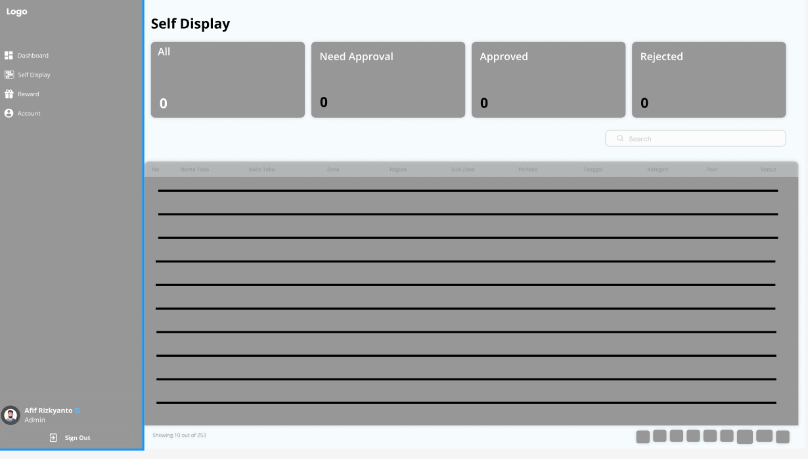
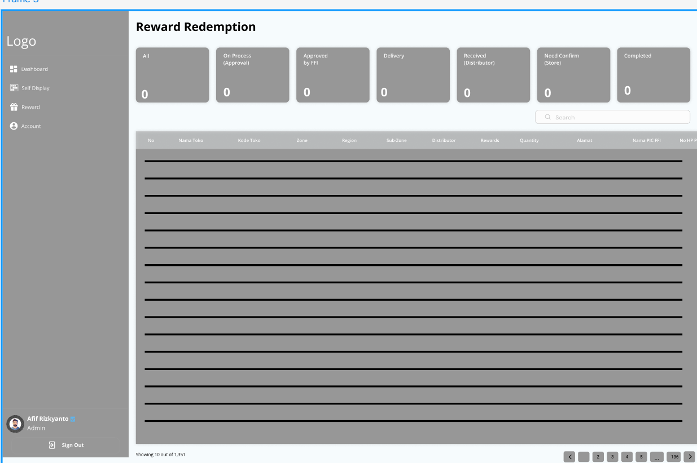
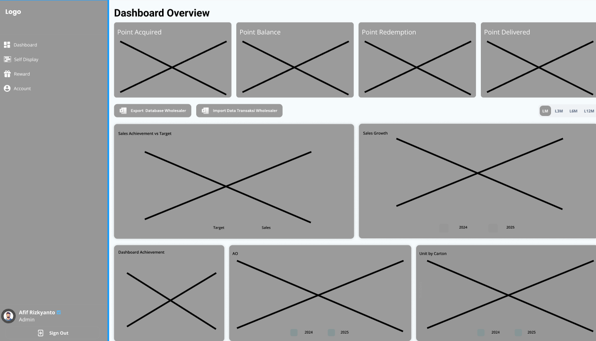
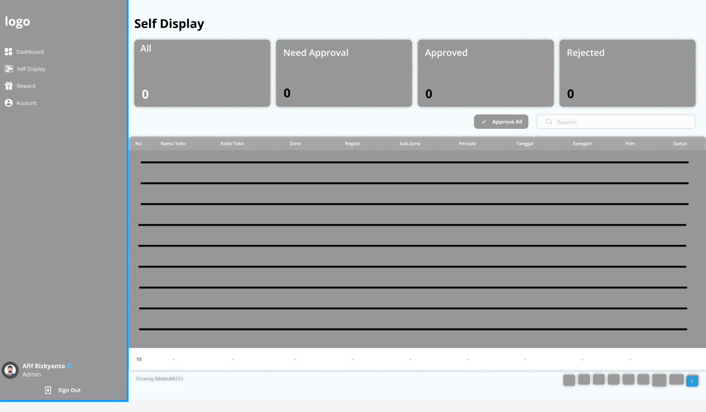
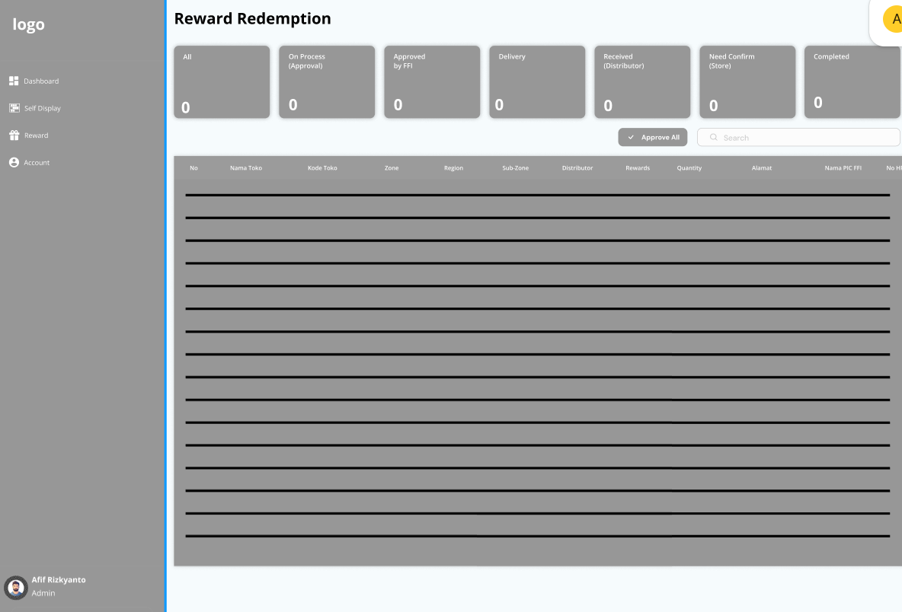
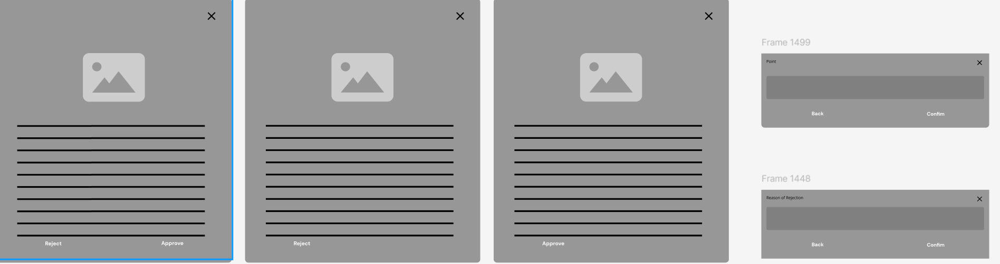

Goal achieved
Dashboard terpusat membuat metrik, validasi, reward, dan tracking dapat dipantau dari satu sistem.
 Afif RizkyantoUI/UX DESIGNER
Afif RizkyantoUI/UX DESIGNER
CASE STUDY / 02
Designer. Saya mengumpulkan persyaratan dari klien, membuat gambar rangka, membuka revisi, dan mempresentasikan hasilnya kepada pemangku kepentingan dalam rapat.
Kebutuhan akan sistem satu pintu untuk memantau metrik utama (perolehan poin, saldo poin, tebus poin, dan status reward) secara cepat.
Membutuhkan sistem persetujuan (Approval) yang praktis, baik secara satuan maupun massal (Approve All) untuk memproses verifikasi foto display toko dan klaim hadiah.
Kebutuhan transparansi alur pengiriman reward (mulai dari proses, approval, pengiriman oleh distributor, hingga diterima toko).
Tim internal perusahaan/principal (seperti Admin atau Manajer Operasional—terlihat atas nama Afif Rizkyanto sebagai Admin) yang bertugas memantau dashboard, memverifikasi foto self display toko, dan menyetujui klaim reward.
Pemilik toko, retailer, atau wholesaler mitra (misalnya Toko Randy, Toko Dedi) yang berpartisipasi dalam program display produk Frisian Flag dan berhak mengumpulkan serta menukarkan poin mereka dengan hadiah.
Membangun sistem terpusat yang membuat pengelolaan program loyalty, verifikasi display, dan penukaran reward lebih cepat, transparan, dan mudah dipantau.
Struktur utama workspace dibagi menjadi lima area agar alur kerja admin mudah dipahami.
The interface prioritizes scanability: high-value metrics are surfaced first, approvals are grouped into clear actions, and status tracking is visible at each step.






Saya menggunakan sistem visual yang konsisten untuk menjaga dashboard tetap mudah dipindai. Hierarki informasi, reusable controls, dan status yang jelas membantu pengguna memilih tindakan berikutnya dengan cepat.
Prioritize the next action while keeping the full reward lifecycle visible.
Sitemap menghubungkan dashboard admin, alur verifikasi, reward, dan manajemen hak akses dalam satu workspace yang dapat diprediksi.
Low-fidelity layouts were used to test dashboard density, table structure, and the approval flow before visual polish was added. Saya memastikan data penting, tabel, dan tombol approval tetap mudah digunakan.
The high-fidelity mockup brings together the dashboard summary, reward status, verification details, and action states.
Testing focused on shortening approval paths and making status changes obvious. The final prototype keeps single-item and bulk actions close to the data they affect.
Dashboard terpusat membuat metrik, validasi, reward, dan tracking dapat dipantau dari satu sistem.
Alur approval dan status tracking harus selalu dekat dengan data yang sedang diproses.
Waproject memberi tim internal dan partner store pengalaman pengelolaan reward yang lebih reliable dan profesional.